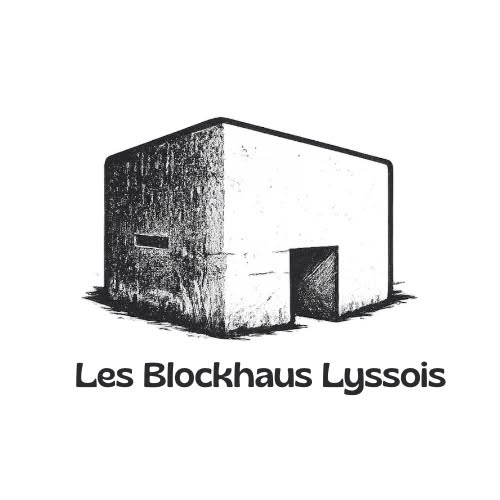

Les Blockhaus Lyssois : Béton, histoire et mémoire
Le groupe "Les Blockhaus Lyssois" est né d'une passion commune pour l'histoire et le patrimoine local, plus précisément celui des blockhaus présents sur le territoire de Lys-lez-Lannoy et ses environs. Notre objectif principal est de préserver la mémoire de ces constructions, témoins silencieux d'un passé souvent douloureux mais toujours fascinant.
Nous nous engageons dans plusieurs actions pour atteindre ce but :
Recherche et documentation :
Nous menons des recherches approfondies sur l'histoire des blockhaus, leur construction et leur utilisation.
Nous rassemblons des informations, des photos et des documents d'archives afin de constituer un répertoire complet et accessible au public.
Préservation du patrimoine :
Nous œuvrons à sensibiliser les autorités et le grand public à leur importance historique.
Partage des connaissances :
Faire découvrir l'histoire des blockhaus à un public large, des passionnés d'histoire aux simples curieux.
Rejoignez "Les Blockhaus Lyssois" pour partager votre passion, contribuer à la sauvegarde de notre histoire et découvrir ensemble les secrets de ces fascinantes constructions !
Pour information : nous ne sommes pas une association.
Pour devenir membre, c'est très simple. Il vous suffit de remplir le questionnaire ci-dessous et nous vous donnerons notre réponse.
Devenir membre